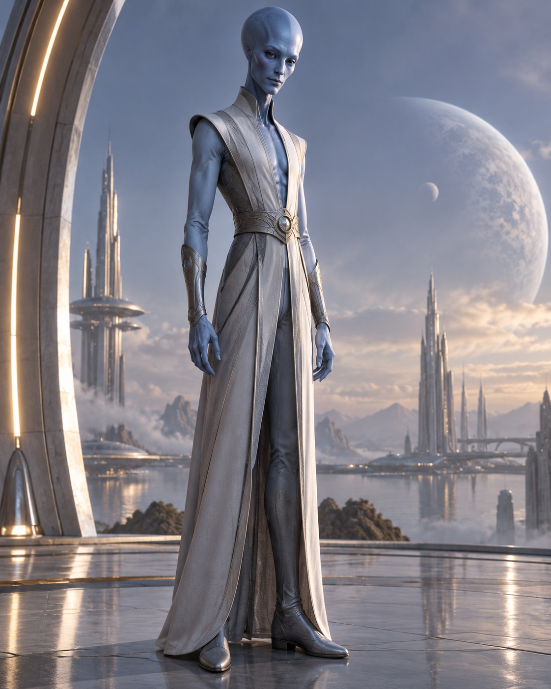
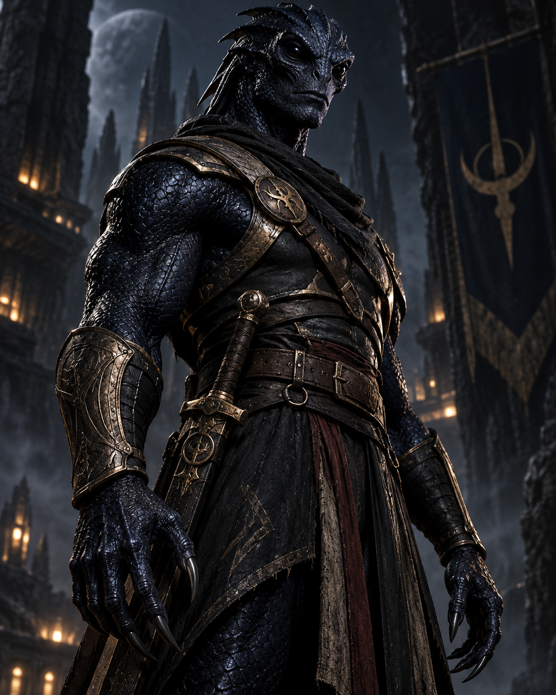

ROLE
Kevin's Trainer
Chixulu prepares Kevin physically and mentally for a conflict whose dangers reach far beyond Earth.

TRAINER AND DISCIPLINARIAN
“Training only looks unnecessary until the danger begins.”
Demanding. Disciplined. Formidable. Difficult to impress. Chixulu prepares Kevin for dangers far beyond anything an ordinary twelve-year-old should be expected to face.
WHO IS CHIXULU?
Chixulu believes preparation matters more than confidence. Kevin may be brave, but bravery without control, discipline or proper training can place everyone around him in even greater danger.
Training Kevin means challenging his impatience, testing his judgement and refusing to be distracted by excuses. Chixulu pushes hard because the enemies waiting for Kevin will push harder.
Chixulu is not warm or openly encouraging, but the severity has a purpose. Beneath the criticism is the recognition that Kevin's courage might matter—if he survives long enough to use it wisely.
AT A GLANCE
ROLE
Chixulu prepares Kevin physically and mentally for a conflict whose dangers reach far beyond Earth.
NATURE
Chixulu expects focus, effort and obedience, particularly when Kevin would rather rely on instinct.
TRAINING GOAL
Kevin must learn that acting bravely is not the same as rushing towards danger without a plan.
HARDEST CHALLENGE
Alien combat may be predictable. Convincing Kevin to stop and think first is considerably more difficult.
STORY APPEARANCES
Chixulu first appears in The Dra-Conian War, where Kevin's courage must be turned into discipline.
PEOPLE CONNECTED TO CHIXULU
Training and survival connect Chixulu to allies who understand that Kevin needs more than courage to face the war ahead.

TRAINEE
Brave, impulsive and frustratingly inventive, Kevin is both Chixulu's greatest challenge and most important pupil.

ALLY
Nivek understands both the scale of the threat and the difficulty of keeping Kevin alive long enough to face it.

SCIENTIFIC ALLY
Kanor's scientific knowledge complements Chixulu's practical understanding of training and survival.
ONE FORMIDABLE TRAINER
Chixulu cannot remove every danger waiting for Kevin. The best protection he can offer is preparation: the strength to endure, the discipline to think and the judgement to know when courage is not enough.
Meet the Rest of the Cast